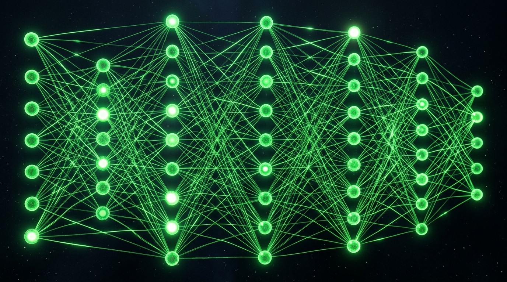

Conseil & Formation en Intelligence Artificielle
Formez vos équipes et intégrez l'IA générative dans vos processus pour gagner en productivité. L'ère de l'automatisation intelligente est à votre portée, démystifions-la ensemble.
L'IA au service de votre productivité
L'Intelligence Artificielle n'est plus de la science-fiction. C'est un outil concret qui permet à vos collaborateurs de diviser par deux le temps passé sur des tâches administratives et répétitives.
- Ateliers Pratiques : Formation à ChatGPT, Claude, Midjourney et Copilot directement dans vos locaux.
- Prompt Engineering : Apprenez à "parler" à l'IA pour obtenir exactement les résultats souhaités.
- Création de Contenu : Automatisez la rédaction de vos emails, devis, fiches produits et visuels de communication.

Stratégie & Diagnostic d'Opportunité
Par où commencer ? Nous analysons vos flux de travail actuels pour identifier avec précision les tâches qui peuvent être partiellement ou totalement automatisées. Un gain de temps massif avec un investissement minime.
- Audit d'entreprise : Cartographie de vos processus internes et identification des "goulots d'étranglement".
- Sécurité des données : Conseil sur les outils d'IA respectueux de la confidentialité de vos données sensibles.
- Conduite du changement : Accompagnement de la direction et des employés pour une transition en douceur.
Questions Fréquentes (F.A.Q)
Nos formations s'adressent à toutes les PME (dirigeants, équipes marketing, RH, SAV) souhaitant utiliser des outils comme ChatGPT ou Midjourney de manière efficace et sécurisée pour gagner en productivité.
C'est un audit où nous analysons vos processus de travail quotidiens. Nous identifions ensuite les tâches chronophages qui peuvent être partiellement ou totalement automatisées grâce aux solutions d'Intelligence Artificielle actuelles.
Aucunement. Nos ateliers sont conçus pour les utilisateurs non-techniques. L'objectif est d'apprendre à "parler" à l'IA (le prompt engineering) de façon très intuitive.